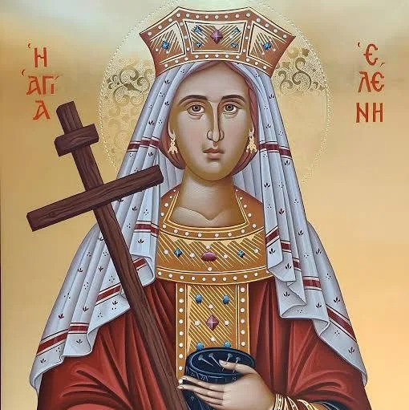
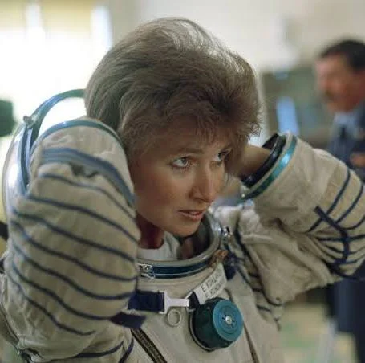

Дорогая Мама! Поздравляю тебя от всего сердца!
Хочу рассказать несколько фактов про твоё имя
Имя Лена происходит от имени Елена, что означает "светлая", "просвещённая". Оно символизирует ясность мысли, доброжелательность и внутреннюю гармонию ✨.

Святая равноапостольная царица Елена Константинопольская (ок. 250–330 гг.) — одна из самых почитаемых женщин в христианстве, мать римского императора Константина Великого.
Елена Викторовна Бережная — выдающаяся российская фигуристка, выступавшая в парном катании. Заслуженный мастер спорта России (2000).

Елена Владимировна Кондакова — третья российская женщина-космонавт, Герой Российской Федерации (1995) и первая женщина в истории, совершившая длительный космический полет.
Лена ассоциируется с лучиками света ☀️, добрым ветерком 🍃 и уютом домашнего очага 🏡.
Пусть каждый день дарит тебе радость, любовь и вдохновение!
Твой сын 😎